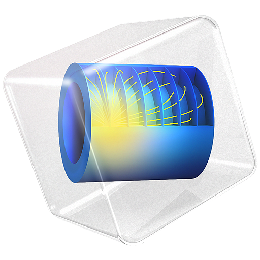
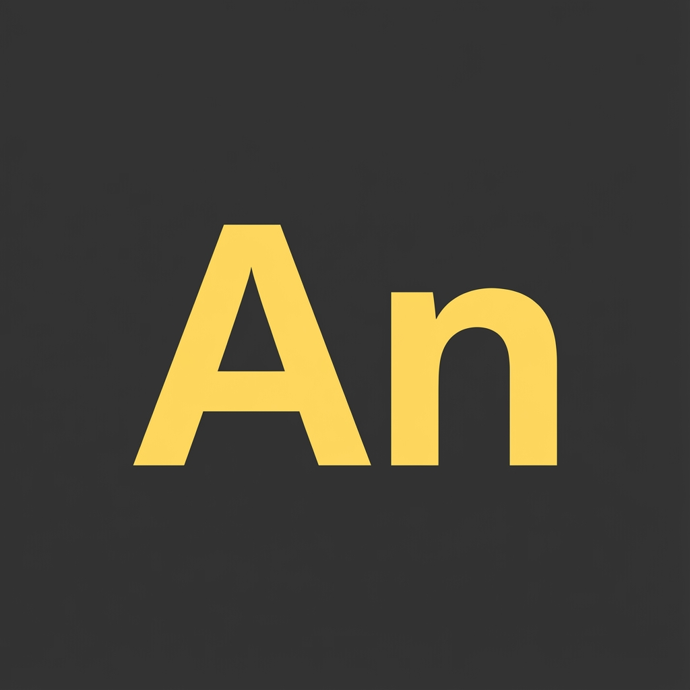
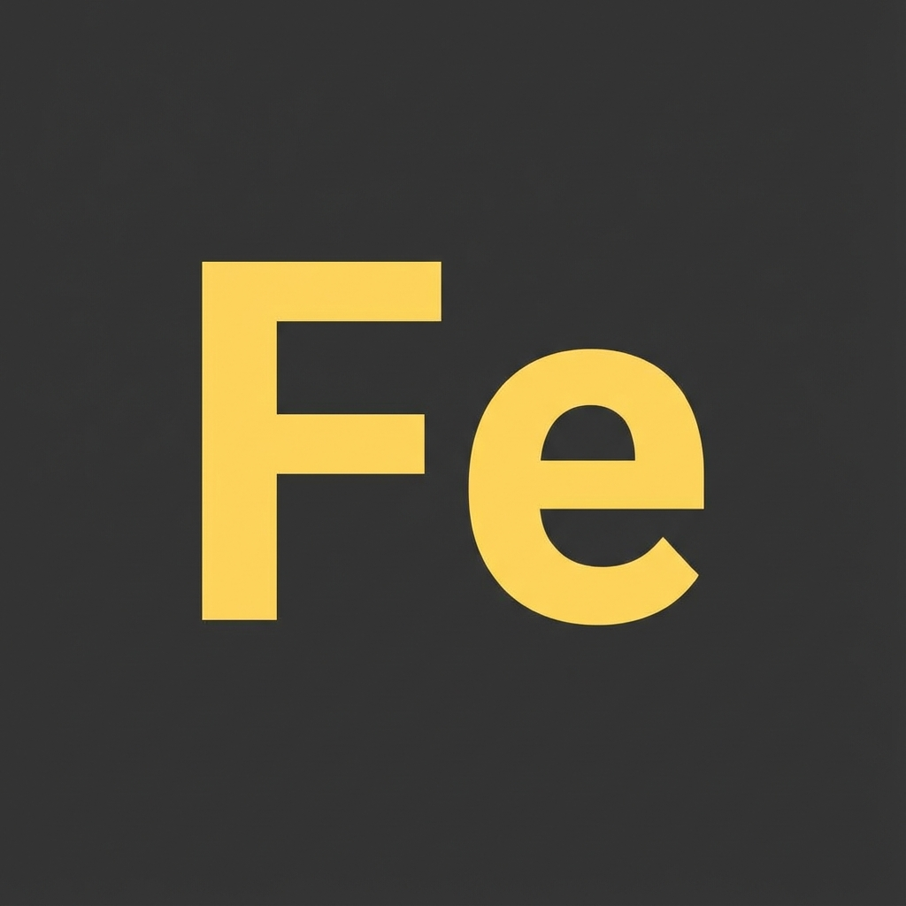
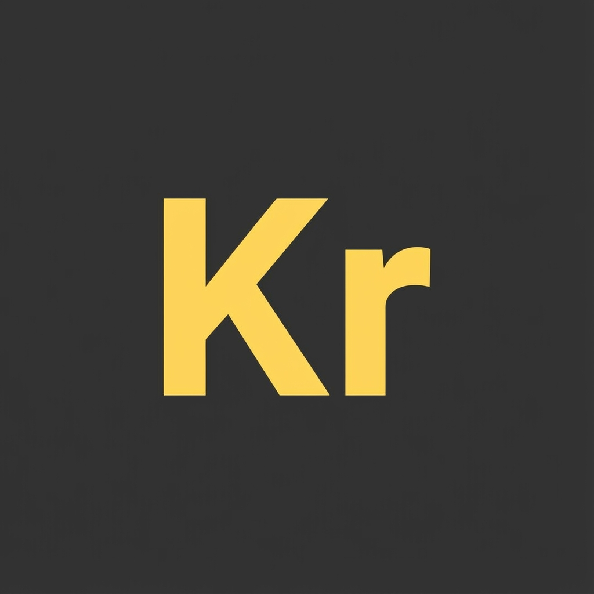
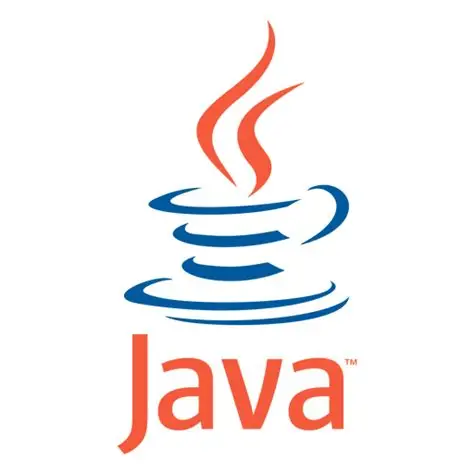
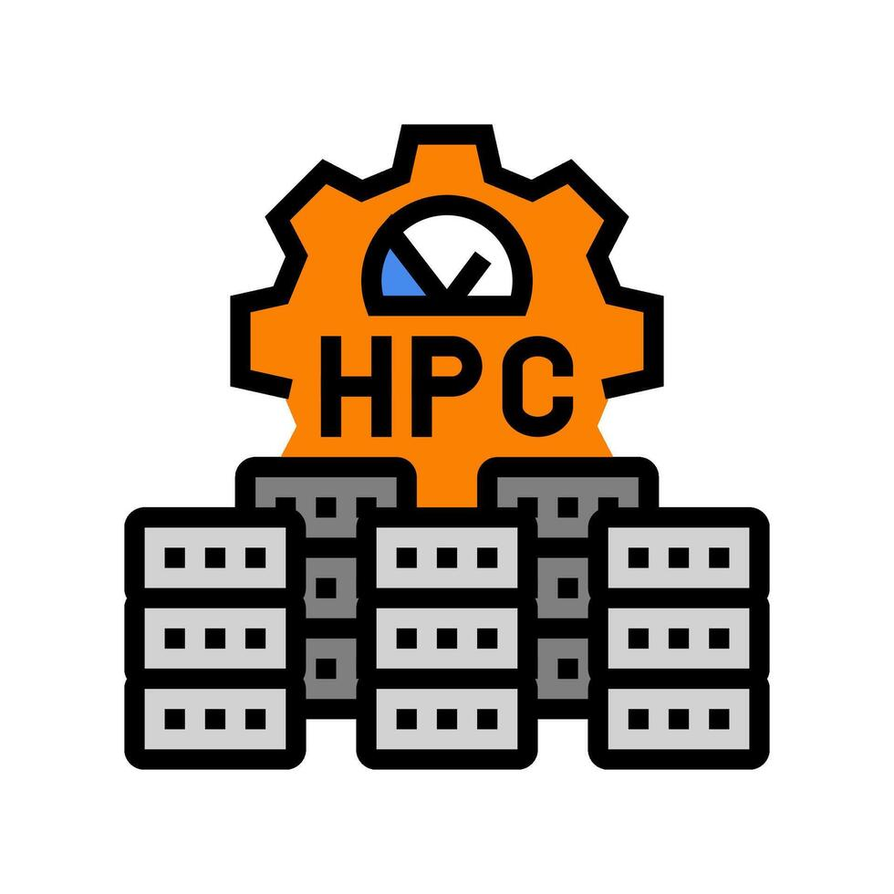
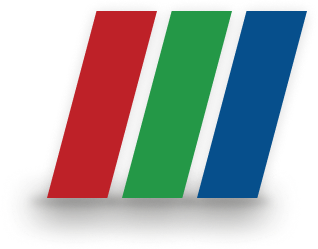

Who I am

With a Doctorate in Mechanical Engineering from ETH Zürich, I develop computational frameworks that bridge classical continuum mechanics with modern physics-informed machine learning (PIML).
My work combines coupled electro-thermo-mechanical FE formulations with ML-enhanced multiscale modeling to simulate advanced processes such as spark plasma sintering from particle interactions to macroscopic components. By training physics-informed surrogates on high-fidelity numerical data, I replace computationally prohibitive multiscale solves with sub-second, real-time predictions.
My foundation includes four years of industrial R&D at Hero MotoCorp conducting structural integrity, fatigue, and vibration engineering.
Microstructure dictates performance. I build the models that make it computable.
Domains I work on
Multiphysics Modelling
Fully coupled electro-thermo-mechanical frameworks that simulate electric current flow, Joule heating, and densification as one unified continuum system rather than three separate solves.
Multiscale Direct FE²
Embedding resolved grain-level microstructures directly into component-scale meshes so micro-mechanics inform macro predictions seamlessly.
Surrogate Models for FEM
Python ML pipelines trained on high-fidelity simulation data that stand in for expensive FE solves, turning hours of compute into seconds in optimization loops.
Computational Engineering & HPC
Structural analysis, fracture mechanics, and optimization at scale — parallelised across HPC clusters with automated meshing and dataset generation pipelines.
Selected projects

Multiscale modelling of spark plasma sintering with a Direct FE² framework
A framework that embeds microscale powder characteristics directly inside a macroscale electro-thermo-mechanical model, improving accuracy and computational efficiency simultaneously — the two things multiscale methods usually trade against each other.

Multi-material spark plasma sintering
A fully coupled electro-thermo-mechanical framework for multi-material SPS, predicting interface behaviour and final geometry against experimental validation.

Material parameter identification for SPS
A numerical–experimental method that predicts density accurately across heating rates for copper and nickel, cutting the experimental campaign needed and transferring to other SPS materials.

Bone tunnel stress in AC joint reconstruction
FEM plus radiological analysis of patient data, identifying tunnel placements that minimise coracoid fracture risk. Published in Archives of Orthopaedic and Trauma Surgery.

Stress regime effects on carbonate permeability
Outcrop data, finite-element geomechanics, and flow simulation on the Latemar carbonate buildup, showing that superimposed tectonic stresses raise permeability by up to 62% — stress history matters when predicting flow in fractured reservoirs.
Where I have worked
-
2021 — 2026

Doctorate Researcher · Advanced Manufacturing Lab
ETH ZÜRICH, SWITZERLAND
-
2019 — 2021

Research Assistant · Chair of Statics & Dynamics
RUHR UNIVERSITY BOCHUM, GERMANY
-
2014 — 2018

Deputy Manager · Chassis Simulation & Analysis
HERO MOTOCORP LTD, INDIA
Where I have studied
-
2021 — 2026
Dr. sc. Mechanical Engineering
ETH ZÜRICH, SWITZERLAND
-
2019 — 2021
M.Sc. Computational Engineering
RUHR UNIVERSITY BOCHUM, GERMANY · DEUTSCHLANDSTIPENDIUM
-
2010 — 2014

B.Tech. Mechanical Engineering
NIT JALANDHAR, INDIA · GOLD MEDAL & ROLL OF HONOUR (RANK 1)
Tech stack & skills
Simulation & Modeling
 Abaqus
Abaqus

COMSOL
ANSYS
FEniCS
KratosProgramming & Libraries
 Python
🔥 PyTorch
Python
🔥 PyTorch
 C++
🏎️ Fortran
C++
🏎️ Fortran
 MATLAB
MATLAB

JavaComputing & Infrastructure

ETH Euler HPC ⚡ OpenMP Docker
Docker
 Git
Git
 Linux
Linux
Data Acquisition & Analysis

ParaView 🔬 nCode DesignLife 📉 Scikit-LearnLanguages
Technical Competencies
Awards & accomplishments
-
Deutschlandstipendium, 2019
Awarded for excellence as an international student at Ruhr University Bochum
-
Achiever Award, 2017–18
Recognized for exemplary performance at Hero MotoCorp Ltd
-
Gold Medal (Roll of Honour), 2014
First rank in B.Tech. Mechanical Engineering, NIT Jalandhar
Publications
Beyond the lab & algorithms
When I'm not solving multiphysics equations or training neural surrogates, here is how I recharge and stay active outdoors.
Alpine Hiking & Trekking
Living in Switzerland means the Alps are my weekend playground. Peak bagging, high-altitude trail loops, and discovering mountain passes keep my perspective sharp.
Badminton Rallies
Fast-paced court agility, rapid reflexes, and competitive match play. Badminton is my go-to sport for high-intensity indoor action and friendly competition.
Distance Running
Pacing along Zurich lake trails and forest paths. Running clears the mind, builds rhythm and endurance, and provides a continuous mental reset.